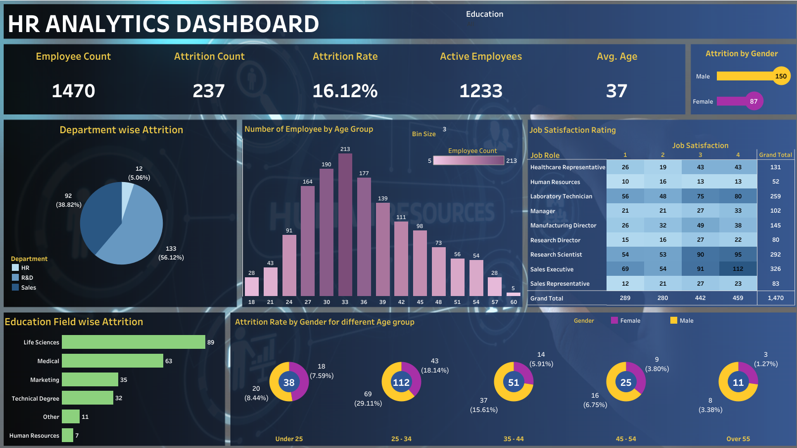

Project Objective
This project involves the creation of an interactive HR Analytics Dashboard using Tableau, with data stored and validated using PostgreSQL.
The dashboard provides a comprehensive view of key HR metrics, including employee demographics, attrition patterns, job satisfaction levels, and departmental insights.
Data Collection and Sources
The project utilizes a comprehensive HR dataset containing various employee attributes and performance indicators.
Dashboard Development in Tableau
The HR Analytics Dashboard was created in Tableau following these steps:
- Data Connection: Connected Tableau to the PostgreSQL database.
- Data Preparation: Cleaned and structured the data for analysis.
- Dashboard Layout Design: Designed the overall layout and color scheme.
- Visualization Creation: Developed individual charts and graphs for each HR metric.
- Interactivity Implementation: Added filters and action filters for dynamic data exploration.
- Performance Optimization: Ensured efficient data retrieval and dashboard responsiveness.
Quality Assurance and Validation using SQL
Quality Assurance and Validation process involves three main components:
- Functional Validation: Testing each dashboard feature and filter.
- Data Validation: Comparing dashboard data with SQL query results.
- Test Documentation: Creating a comprehensive test document with screenshots and SQL queries.
Dashboard
The image shows a sample HR dashboard displaying key metrics and trends extracted from the HR data analysis.
Outcome
The HR Data Analysis Dashboard provides a powerful tool for HR professionals to gain insights into workforce dynamics, identify trends, and make data-driven decisions. By leveraging Tableau's visualization capabilities and PostgreSQL's robust data management, we've created a solution that enhances HR operations and supports strategic workforce planning.
VIEW PROJECT FILES